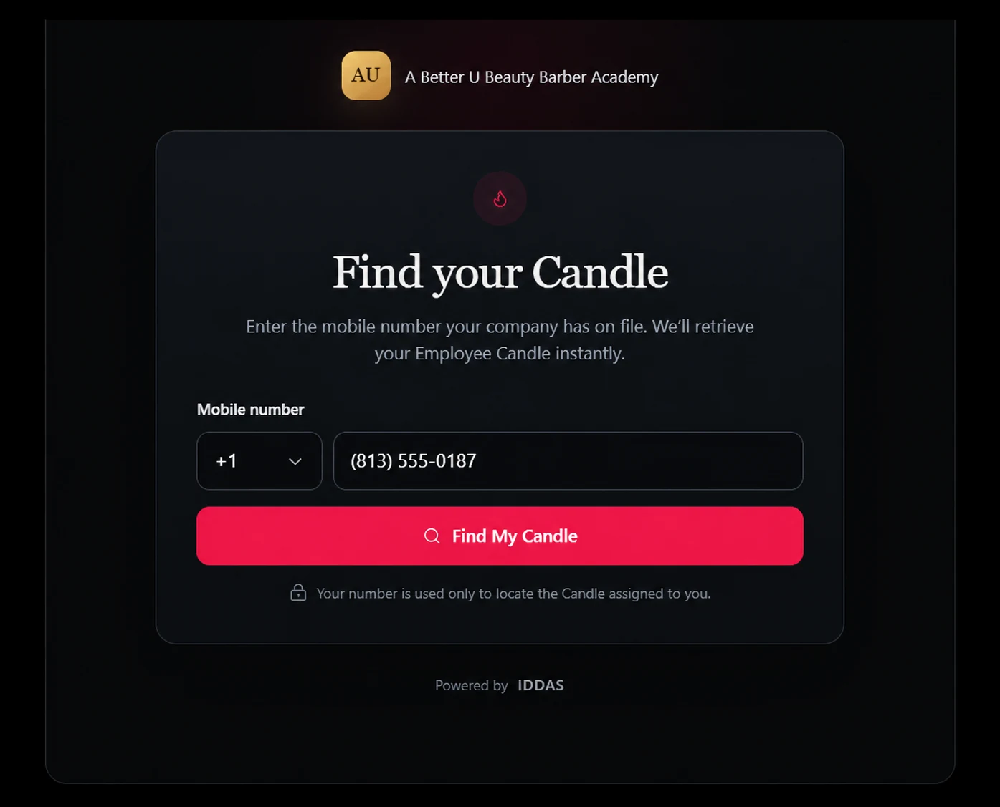
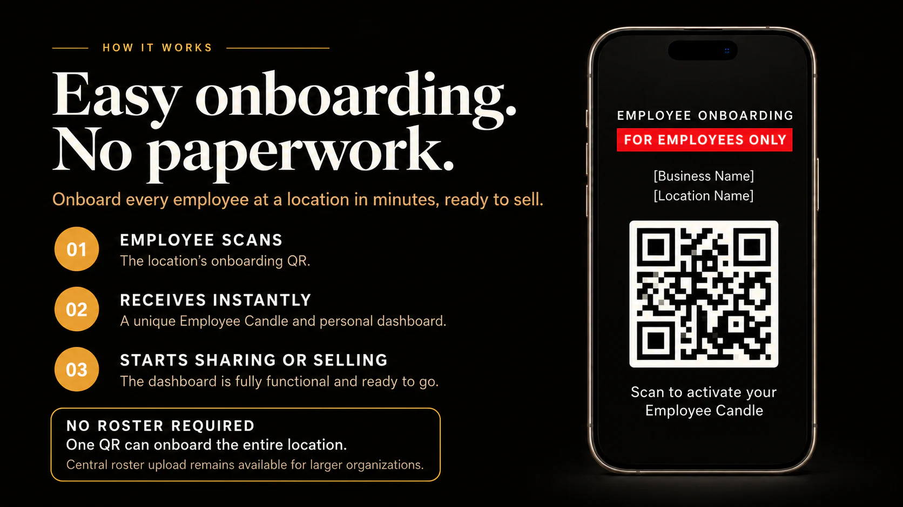

NSNorthstar Salon Group
Your Candle is back
Welcome, Ava.
Your personal Candle is ready to save.
Ava
Your Company
A private way back for every team member
You receive a branded recovery link to share with your team. Each person can retrieve only the Candle already assigned to them.
One employee recovery path
If an onboarding email does not arrive, a link is lost, or a phone changes, the team member opens your recovery page.
The branded recovery URL is supplied to your company, ready to share with every employee.


The match returns one result
The correct personal page opens, already connected to the right company and location. The team member saves it to Apple Wallet or Google Wallet and can begin sharing it with clients.
Your Candle is back
Your personal Candle is ready to save.
Ava
Your Company
The original way in
A manager can show it on a phone or print it. It already knows the correct company and location.

Included with your program
Your branded onboarding and recovery pages are prepared instantly when each team member receives their Candle from a manager or scans the employee-only poster. Both are included with the program.